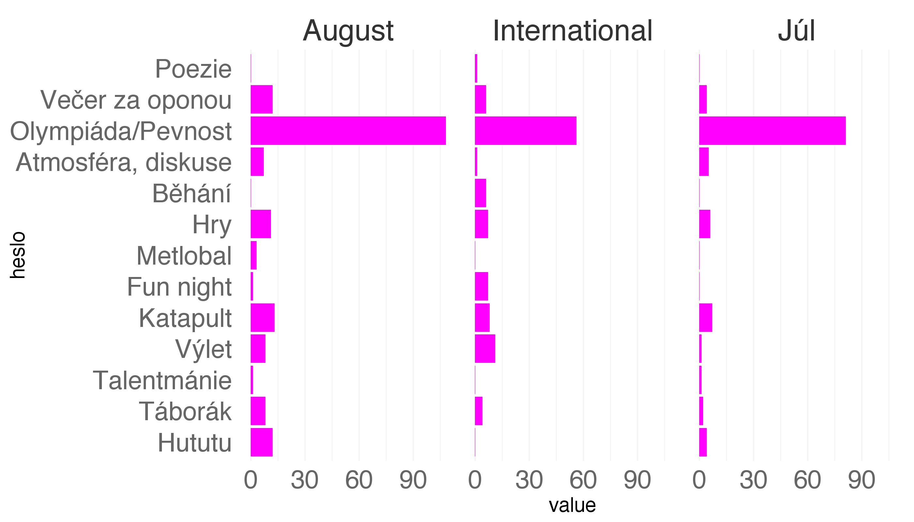
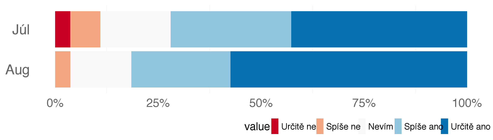
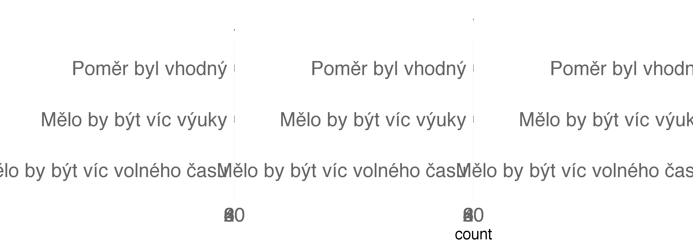

Sice jsem s ním neměl osobní schůzku, ale myslím si, že v dnešní době se zapomíná na psychickou hygienu. Stejně jako je potřeba si každý den čistit zuby, jinak by se zkazily, tak je stejně důležité “čistit” svoji mysl.
Pomohla mojej kamaratke ked mala problemy a sa citila zle na Discoveri.
pomohla mi pochopit urcite veci ktore su pre mna tazke z hladiska chapania
Ja osobne som túto možnosť nevyužila, ale myslím si, že iným ľudom to mohlo pomôcť.
mohli sme sa s nasou psychologickou porozpravat o veciach, ktore nas tazia, a ktore by sme mozno v inom pripade s nikym nerozoberali
Lide, kteri maji nejaky problem a nechteji o nem mluvit, meli prilezitost ho duverne probrat.
Dalo sa snou pokecat
Je to skvela moznost porozpravat sa o zivote a pocitoch s niekym, kto moze poskytnut odborne rady.
Ja jsem osobne moznost konzultace nevyuzila, ale ucastnila jsem se nekterych workshopu s Klarkou a jeji pritomnost zde vnimam jako nadstandartni benefit.
dala účastníkom moznosť sa porozprávať o problémoch s profesionálom neformálne …možno by inak pomoc nevyhladali …a určite to bol prínos v rádávh o kariére ako celku
Lidé s problémy mohli na vlastní pěst vyhledat pomoc nebo radu bez toho aby na ně tlačilo okolí v jakémkoliv směru.
Možnosť sa poradiť
ja som ju sice nevyuzila ale myslim ze bol velmi dobrý poscit ze sa mame komu zvarit ked mame nejaký problém.
je to netradicne, ze na taboroch je pritomny aj psycholog. Jeho prinos je podla mna v tom, ze ludia sa s nim mozu bezplatne porozpravat a je uzitocny aj v uvadzani niektorych aktivit napr. noc za oponou
Sice ja som psychologcku nestihla vyuzit, no pre ludi ktori s nou viedli rozhovor bola urcite uzitocna. Ja som sa zucastnila jej dvoch workshopov, kde nam dala velmi prakticke rady a uzitocne informacie.
Je velky tlak na student. Kazdy z nas je ambiciozni a vyviji na sebe tlak. Psychologicke stavy stale maji na sobe stigma. Terapeut muze pomoct zlepsit nase zivoty a poskytnou nam pomoc ke ktere bychom jinak nemeli pristup. Tato pomoc je velmi potrebna
Mít možnost se na někoho obrátit. Já toho nevyužil
Já osobně jsem ho nevyužil, ale ostatní ano. Myslím že právě ti, kteří psychologa využili ho také velmi ocenili.
Nie vždy sa naskytne príloežitosť porozprávať sa o vašich problémoch s odborníkom, či už z pocitu odmietania - nechceme prijať fakt, že možno potrebujeme túto pomoc a radu. Mentálne zdravie je rovnako důležité ako to fyzické, preto by sme ho nemali zanedbávať. Bolo to veľmi pomocné pre viacerých ľudí, ktorí sa možno nikdy predtým nerozprávali s psychológom a tu si to práve mohli vyskúšať.
ľudia sa mohli ísť poradíť ak mali nejaký problém, čo možno v bežnom živote nespravia.
Mne konkrétne nebolo treba pomôcť, ale ostatnym ano a zaroven asi aj pripravovala ci vyberala pani psychologicka nejake videa na workshopy
pretože každý potrebuje velakrat pomoc aj ked o tom nevie alebo si to nechce priznat
Bola to možnosť prediskutovať isté veci z iného pohľadu. A Klárka bola obohatením celého Discoveru.
mohla jsem s ní probrat nektere svoje problemy a moc mi tim pomohla.
ja som sa osobne s nou nerozpravala ale vyuzila som tu moznost minul rok a je to fakt super
Velmi jsem ocenila možnost si s někým popovídat o svých problémech nebo starostích. A pak si poslechnout rady a názor odborníka.
vedela som sa spýtať a veci, ktoré ma trápili a workshopy , ktoré viedla ma zaujali
Dali mi rady.
Viem, že veľa ľudí to využilo a aj im to pomohlo, ale ja osobne by som tam nešla a cítila by som sa tak, že tú psychologičku len zaťažujem, proste že ľudia majú aj väčšie problémy.
U psychologičky bola možnosť sa porozprávať a analyzovať veci, ktoré ma trápia.
Pomohla mi s jednou věcí.
Mali sme moznost s niekym sa bez strachu porozpravat, tak aby o tom nikto nevedel.
Byl jsem si jistý, že je zde někdo, kdo mě vyslyší ohledně mých problémů a je to odborník, takže mi poskytne něco víc než pár chlácholivých slov. Klára byla úžasná!
minulý rok bola eliška potrebnejšia ako psychologička tento rok, ale tiež asi pomohla mnohým účastníkom, aj keď asi menej ako Eliška
Ačkoli jsem přítomnost psychologa osobně nevyužila, myslím si, že je dobré mít možnost se s ním pobavit o osobních záležitostech.
člověk zde vidí, že mnohé věci lze překonat a má i optimističtější a ambicióznější vyhlídky na budoucnost, ovšem pokud mu v cestě stojí nějaký problém ze strany rodiny nebo vlastní psychické situace, je přítomnost psychologa velice užitečná, sama jsem jí využila
pomohol ludom kt. to potrebovali
Vždy je dobré mít tu možnost, zonzultovla jsem nějaké mořnosti terapie a kontakty.
Aj keď som sám nevyužil prítomnosť psychológa, tak mi táto prítomnosť dodávala pocit istoty(kvôli tomu, že som vedel, že ak ho budem potrebovať tak tu pre mňa je).
Jednak samotnú psychológiu považujem za zaujímavý odbor a človek sa može podeliť so svojimi problémami v priateľskom prostredí bez obáv. Vždy je užitočné vypočuť si profesionálnu radu a navyše workshopy boli super.
daji se s nim konzultovat ruzne problemy
Ja osobne som konzultácie s psychológom nepotreboval, no mal som Kláru ako shadow prefekta a jej príspevky do diskusie boli vždy prínosné.
vdaka veceru za oponou som si uvedomila pomerne vazny problem a mohla som vdaka pritomnosti psychológa okamzite reach outnut a vyhladat pomoc
Mali skvele workshopy ohladom tem,ktore sa nás naozaj tykaju. Takisto mali skvele otázky pri workshopoch inych. Velmi pozitivne.
Eliska mi vedela velmi dobre pomoct pri mojich problemoh, ktore sa zrazu javia ako riesitelne.
pocit jistoty, že tu je někdo pro nás
skvely workshop o rozhodovani, bolo to skvele
Byla to možnost popovídat si o svých problémech a možnost účastnit se zajímavých workshopô
Podľa mňa bola prítomnosť psychológa užitočná v tom, že som s ni mohla prebrať témy, ktoré má ťažia a potrebujem v ich poradiť.
Kvôli radám …
Upokojujúca atmosféra počas niektorých diskusii či podla môjho skromného názoru veľmi užitočná noc za oponou.
Bolo super, že sme mali možnosť to využiť, a že sa Discover strará aj o duševné zdravie.
Mala som kurz psychológie.
Väčšinu z nas nenapadne ísť k psychológovi bežne. Ci uz z časových dôvodov, ci je to kvoli predsudkom voči ľudom navštevujúcich psychológa, alebo len mozno preto ze im to nenapadne, no každopádne tam nechodia. O problémoch sa teda bud rozprávame s kamarátmi, ktori nie vždy nám vedia/chcú/môžu pomôct, nevedia ako reagovať alebo ma dokonca na nas zlý vplyv a ich nápady by neboli najlepšie. Avšak ked tu mame dve psychologicky k dispozícii ochotne s nami stráviť cas, vypočuť si a povenovat sa nám, jr omnoho väčšia pravdepodobnosť toho ze za nimi pôjdeme a vyrozprávame sa. Co pomáha našemu duševnému zdraviu nakolko držať problémy v sebe nie je dobre. Ja im za to ďakujem :-)
Potrebovala som sa porozprávať o určitých veciach a veľmi mi pomohla prítomnosť psychológa
Pokud máš,nebo jsi měl nějaké psychické problémy, tak se jich tady na to můžeš zeptat a oni vyjdou vstříc.
Člověk se mohl vyzpovídat z problémů a dostat odborné rady.
Člověk si s nimi může popovídat+jejich témata na workshopy byly originální
Ti ktori mali problemy sa mohli vyrozpravat bez tlaku od okolia ktory je doma (“ty chodis k psychologicke, musis byt blby”)
Mohli sme využívať ich prítomnosť, rozprávať sa s nimi a spoznať ich pohľad na svet
Pokud mame nejaky problem, tak psycholog jej muze vyresit a zlepsit tak nase dusevni zdravi. Ja osobne jsem toho vyuzil a doporucuji to.
Ak sa objavil problém, bolo sa s kým pozhovárať.
discover je velmi přátelské prostředí a my jsme měli možnost pobavit se s Eliškou a ivkou uplně o všem. Navíc studium a plánování budoucnosti může být někdy unavné a potřebujeme psychickou pomoct od všechápajících profesionálů.
Mali sme moznost pomoci, starostlivosti o telo i ducha. Povazujem za velmi dolezite rozpravat sa o takychto zalezitostiach otvorene.
Iva mi pomohla v problému, který jsem dlouho řešil, nevěděl jsem si s ním rady a byl jsem z toho smutný. Navíc velmi lidským a empatickým způsobem. Za to jí patří velký dík.
Možnosť sa porozprávať o problémoch, skvelé workshopy a podpora.
Spousta lidí se stydí o svých psychických problémech stydí mluvit a tato možnost je neformální a kamarádská, a tudíž jí využije více lidí.
Bolo super, ze sme mali moznost to využiť, a ze sa Discover stara aj o psychickú stranku.
Pokojná atosféra dodávana v diskusiách s nimi.
Libily se mi jejich workshopy o rozhodovani - uklidnilo me to v tom, ze rozhodnuti,kam pujdu studovat neni nijak zasadni. Celkove ocenuji zdurazneni psychickeho zdravi!!!
Su tu ludia, kt. to naozaj potrebuju no samy, mimo discover, by k nemu nesli
Kdykoliv mohl pomôct, když vylo třeba
Pretože sám viem, ako mi minulý rok pomohla ich prítomnosť a do podobnej situácie by sa mohol dostať každý Discoverák.
Mohla jsem si popovídat o věcech, ktere bych s kamarady neřešila
Prítomnosť psychológa bola z môjho pohľadu dôležitá v tom, že som sa s ním mohla porozprávať o veciach, ktoré má trápia a neviem si s nimi rady. Túto možnosť som využila a ďakujem za ňu.
Možnost pře diskutovat nezávazné svoje problémy a získat náhled na ne
Pro mě v tom, protože jsem měla právě kurz Psychologie, který by bez našich úžasných psychologů nebyl. Ale i pro ostatní v tom, že je mohli “využít” a promluvit si s nimi o čemkoliv, jako například výběr školy, osobní problémy ať už v rodině nebo v partnerských vztazích… A vím, že ikdyž jsem to nevyužila zrovna já, protože v tuhle chvíli mě tolik věcí netrápí, tak vím o dosti lidech, co to využili a všichni byli moc spokojení :)
Osobne som služby nevyužil ale bolo jasne ,ze niektorým účastníkom to razantne pomohlo
Mali zaujímavé prednášky.
Umoznila mi porozpravat sa o mojich problemoch s niekym kompetentnym a najst s nou mozne riesenia a alternativy. Taktiez, mi poskytla silnu moralnu a citovu podporu.
Mohla jsem se vypovídat.
Opora. Prevence.
Pretože mnoho ľudí má v živote problémy, či ťažké chvíle, o kt. by si s niekým potreboval pohovoriť, no málokedy sa naskytne príležitosť s kým a ako. je super, že je tu priamo priateľská odborná pomoc, ktorej má mnoho ľudí omnoho menší problém sa vyrozprávať ako psychológom, s kt. nemáme takýto vzťah a nepoznáme ich dostatočne na to, aby sme im zverili svoje zlyhania, tajomnstvá, či trápenia.
Pritomnost psychologa byla velmi dulezita, protoze pomohla lidem, kteri to potrebovali. Kdokoli si mohl za psycholozkami dojit a poprosit o konzultaci. Je to velmi dulezite, protoze dusevni zdravi je podle mne dulezitejsi nez to fyzicke, i kdyz v praxi se obcas tvrdi opak. Osobne jsem o konzultaci take poprosil a byla mi velmi uzitecna, a tak doufam, ze tento koncept bude zachovan.
Protože mi Eliška pomohla, když jsem měla své slabší chvilky, kdy jsem potřebovala být chvilku pryč od hluku a od lidí a pomohla mi vymyslet techniku, jak když mi bude zase někdy o trochu hůře, dát lidem najevo co dělat a co spíše nedělat, aby to ještě z nějakého důvodu nezhoršovali. A byla ochotná včera večer jsem mnou zůstat na pokoji a počkat až mi bude lépe a jenom tam se mnou byla.
V tom, že každý kto mal potrebu sa vyrozprávat a zdôveriť mal tú možnosť
ja osobne som nevyužila možnosť individuálnych konzultácií, ale jedna zo psychologičiek mi bola celý týždeň tímovou prefektkou, a teda som pociťovala jej podporu ako odborníka aj takto v rámci tímu resp. ako prefekta; no verím, že mnohým ľuďom prítomnosť psychológov naozaj pomohla
Mala som kurz psychologie.
Presto ze jsem sluzby nevyuzil a ani si nemyslim ze bych ji potreboval, verim ze je tu spousta lidi, ktere to ocenili a pripadne si i zlepsili/zjednodusili zivot.
Rozhodne dokáže človeku pomoct z roznych hladísk, či už s plánmi do budúcna a istým sposobom v kariernom poradenstve - resp.ako sa dobre rozhodnút a podla čoho a samozrejme každý z nás ocení ked sa má s kým porozprávať o osobných veciach a nebojí sa na týchto ľudí spoľahnúť.
Ja som to sice nevyuzila, ale podla mna je to velmi uzitocne a urcite to mnohym ucastnikom velmi pomohlo.
Mohli jsme si promluvit o čem jsme chtěli, ne jen o problémech, ale i o budoucnosti.
ja som tuto možnosť síce nevyužila ale viem o ľudoch, ktorí áno a vyzerali spokojne
Vzdy nam vedel pomoct s akýmikoľvek problemami.
Vzdy je dolezite zaistit aj dusevnu pohodu ucastnikov
Osobne som tuto sluzbu nevyuzil ale znacne mnozstvo ucastnikov urcite ano.
V aktivitách, ktoré boli prínosom pre rozvoj aj v inom smere.
pretoze som sa mohla poradit o mojich problemoch, ktore sa hanbim riesit s rodicmi alebo s kamaratmi.
Ja osobne som ho nepotreboval, no určite sa našli aj taký čo hej
Ľudia sa s nimi mohli porozprávať o hocičom a pritom vedeli, že im poradia a nie sú tu od karhania alebo presadzovania ich názorov ale o hľadaní odpovedí na otázky.
Psychická stránka človeka je rovnako potrebná ako fyzická či intelektuálna
Byli nápomocni pomáhat celý den.
Mnoho ľudi sa mohlo s nimi porozpravať o veciach, ktoré ich trápia a dostať radu.
Mala som istotu, že keby som potrebovala prebrať nejaký problém a niekomu sa zveriť, mám za kým ísť
lide, kteri se boji bavit o svych problemech ve svym okoli a rozsirovani povedomi o dusevnim zdravi
Přispíval k debatám a jejich usměrňování, bylo fajn mít možnost jít něco probrat, pokud je potřeba.
Mohli jsme s nimi řešit problémy , které se řešit bojíme před znamymi
Aby sme sa odhodlali ku konzultácii ku ktorej by sme bez tejto možnosti neodhodlali
Dokázala mi pomoct s mojim sučasnym stavom.
možnosř prediskutovať naše problémy
Potkala jsem jednu slečnu, pro niž byla podle všeho asistence zdejšího psychologa užitečná a nápomocná, rozhodně nás slečny lektorky poučily i o našich životních cílech a plánech.
mali uzastni kurz, zdielanie svojich problemov s psychológom može byt uzitocne
diky lonske moznosti mluvit s psycholozkou jsem nasla odvahu najit si psychoterapeutku, coz je dost vyrazne zlepseni v mem zivote.
Mnoho lidí v mém okolí tuto možnost využilo.
Mnoho z nás sa bezne neodvázi ist k psychologovi a porozpravat sa (predsudky voci ludom ktori chodia k psychologovi) a tym padom im bud radia kamarati (ktori nie vždy dobre radia) alebo to dusia v sebe (tiez zla moznost) a tu je prostredie bez predsudkov a ty,m ze su k dispozicii skoro stale je to jednoduchsie. Mnozstve ludi nenapadne ist za psychologom a blizkost a dostupnost dvoch super psychologiciek tu veci ulahcila. Vazne pomahaju a urcite ostante !
Letošní Noc za oponou byla velmi emotivní. Uvědomil jsem si na ní, že i ti nejúspěšnější lidé mají za sebou zážitky, za které nejsou pyšní, ale nesmíme zapomínat, že je tu vždy nějaké řešení, i když se může vzdát příliš vzdálené.
Že rozny ľudia s roznym životom inak prežívajú rozne problemy
aj ostatný maju rozne problemy v zivote aj ked sa to na prvy pohlad nezdá
Kazdy mame nieco o com nehovorime bezne kazdemu. Len som si ujistila v tom, ze vsetci teda mame nejake urcite komplikacie v zivote a je velmi dolezite ich zvladnut a ist za svojim cielom.
Mňa to celkom pozitívne ovplyvnilo, lebo keď som počúval, ako lektori išli po svoje životné cesty ja som si uvedomil, že sa musíš usilovať a naozaj dať do učenia úplne všetko, aj keď všetko nemusí ísť podľa tvojej vôli, lebo však život nemôže byť perfektný.
Nijak,
Tak že aj ľudia , ktorý zažívaju úspech majú aj svoje problémy
Celkom zaujímavý koncept a asi hlavne to že každý problém sa dá riešiť niekedy to síce možno chvíľku trvá ale vždy je nejaké to riešenie.
Každý máme svoje zlyhania a každý niekedy prechádza ťažkým obdobím. Je to normálne a netreba to dusiť v sebe, práve naopak, treba nájsť cestu ako sa s tým vysporiadať a ako sa z toho poučiť.
Odniesla som si to, že v živote cloveka nie su iba uspechy, ktore vidime, ale že za tými uspechmi je vela padov.
obdivujem schopnost lektorov podelit sa s nami o svoje neuspechy, cio veci, ktore ich trapia. sama mozem povedat, ze taku odvahu by som pravdepodobne nemala. noc za oponou na mna sice posobila emotivne, no nasledne som sa mohla porozpravat bud s psychologickou alebo s kamaratmi, o tom, co ma trapi
Kazdy clovek ma problemy, ikdyz je to treba uspesny clovek.
nezúčastnila som sa
Byla zajimava. Jsem rad, ze jsem videl, ze vsichni krome uspechu mame za sebou i neuspechy.
Super paci sa mi ze som sa dozvedel o problemoch konkretnych lektorov ktore mi ukazali ze sa stavaju a aj zle veci viacerym ludom
Vytrvat a nikdy se nevydat.
Je to velmi dobry napad, urcite mi to povedalo, ze problemy ma kazdy clovek a dokonca mi vykreslila i podobnu zivotnu situaciu, aku prezivam teraz.
Pro me byla vemi dulezita, naucila jsem se, ze i ti nejuspesnejsi lide maji sve problemy. Take jsem zjistila, ze nedostat se na Oxford nebo Cambridge neni nejvetsi zklamani v zivote.
bolo to velmi emotívne a inšpirujúce …odniesol som si vedomosť že aj úspešný a múdry ludia maju problémy a teda je to uplne normámlní
otvorilo mi to oci v urcitych aspektoch mojho osobneho zivota
Pomohlo to vidět lektory v osobnějším světle a ukázalo nám, že i za úspěchy se můžou skrývat tragedie.
Noc za oponou vnímám jako jednu z nejlepších akcí na Discoveru. Uvědomit si, že i ostatní mají své problémy a že se všechno dá řešit, bylo pro mě moc důležité.
Veľa vecí ktoré sa dejú v živote človeka nevidíme.
Některé příbehy už jsem slyšel, ale ostatní byly velice emotivní. Odnesl jsem si, že ne vše v životě člověka je růžové.
Odniesol som si jedinečne skusenosti , o ktoré sa len tak hocikto nepodeli
( . Y . )
vela zkusenosti ktoré mozem aplikovat ak sa ja stretnem s daným problémom.
Silný zážitok. Je dobré a užitočné počuť príbehy ludí, ktorý v našich očiach sú “géniovia”, ale zaživaju problemi ako mi, normalny ludia.
Prekvapilo ma ze boli lektori ochotni rozpravat o svojich problemoch. Pozitivne.
Bolo to niečo iné a veľmi zaujímavé a užitočné. Počuť príbehy dospelých ľudí a ako sa s nimi popasovali je v mnohých ohľadoch nápomocné. Nakoniec si človek uvedomí, že tieto príbehy môžu byť podobné jeho, a aspoň má tú možnosť vidieť a počuť ľudí ako sa s nimi vysporiadali. Moje problémy sa podobajú niektorým ktoré boli rozoberané, a pohľad človeka ktorý si tým všetkým prešiel je nápomocný.
Bolo to povzbudzujúce, pocut, ze aj lektori mali nejaké zlyhania v živote a dokázali to prekonať.
Zaujimave pribehy na motivaciu. Casto vsak slabe mozno malo opisne pribehy
Pripomenul som si, ze kazdi mame nejake proplemy, ocitneme sa v horsom obdobi, ale ze sa to da riesit a rozpravat o tom
Uprimne pribehy od lektorov ma vazne povzbudili a ukazali nam, ze aj velmi uspesni ludia maju svoje problemy a tazkosti, ktorymi si museli prejst. Najviac ma potesilo tvrdenie, ze nie vsetci su predurceni a musia ist na oxford, cambridge a podobne. kazdi moze snivat vlastnym sposobom.
Je super videt ze i nasi lektori nejsou superhrdiny ktery se vzdy darilo. Uvolmilo to tlak, ktery na sebe vyvijim a popmohlo mi to uvedomit si ze zivot neni primo cari. Hlavne ze ne kazdy musi pracovat na Oxbridge
Že každý je někdy dole a že vše jde překonat a být úspěšný
Noc za oponou na mě působila velmi silně. Vím, že svěřit se s některými problémy středoškolákům nemusí být vždy lehké. Spíš než že jsem si něco odnesl mi to spíš jen utvrdilo to, co už vím. Že život nemusí být vždycky tak fajn, ale stojí za to vydržet, protože bude lépe.
Že ak sa nedostanem na Cambridge, ze mi neskončil zivot :) hehe
Noc za oponou bola jednak skvelá príležitosť lepšie spoznať našich lektorov, nahliadnúť do ich vnútra a zistiť, že aj oni prežívajú problémy v súkromnom živote. Taktiež to bola aj chvíľa pre nás - Discoverákov, byť len ticho a počúvať. Páčila sa mi diverzita problémov, bolo skvelé, že boli zahrnuté aj problémy so vzťahmi a rodinou, nie len výber univerzity a neúspechy v akademickom živote.
Bola to veľmi dobrá skúsenosť, kde som si uvedomil viacero vecí. Prehodnotil som si svoje životné hodnoty.
že aj úspešný ľudia majú problémy a že za každým úspechom je drina
Myslienka bola ok ale moc to na mna nezaposobilo
že život a očakávania sú tažké
zaujimavy napad, ktory mi ukazal, ze aj uspwsni ludia maju obycajne problemy a musia ic prekonavat
Bolo to veľmi úprimné, prospešné a otvorilo mi to oči.
bylo pro me dulezite, ze probehla, uvedomila jsem si, ze cesta k uspechu neni snadna a ze i lektori, kteri pusobi dokonale, maji problemy.
ze zivot bez problemov by nebol zivotom a ze kazdy ma nejake problemy aj ked to moyno na prvy pohlad nevidno a vsetko sa po case zlepsi
Veľmi sa mi páčila, uvedomila som si, že nik z nás to nemal v živote ľahké a aké je dôležité nevzdávať sa
Bylo to moc fajn. Ukazalo mi to, ze nekdo ma treba podobne problemy jako ja a je schopen se s nimi vzporadat.
Zjištění, že i za mimořádně úspěšným příběhem člověka se skrývají temné nebo pesimistické stránky, které často ani nikdo z okolí nevidí.
Přišlo mi to jako velmi zajímavý koncept. Vidím to jako jednu s jedinečných možností Discoveru, kdy člověk pozná, že jeho problémy, boje a dilemata jsou něčím normálním s čím se vypořádávají i ti nejúspěšnější lidé. Myslím, že se odehrála v dobré atmosféře otevřenosti a respektu. To, co jsem si odnesl asi nejvíce, je, že pro překonávání jakýchkoliv překážek v životě je důležité se hlavně spoléhat na své blízké lidi a pamatovat, že každá krize jednou přejde.
Bylo to super. Vytvořilo to velmi silnou atmosféru a ukázalo nám to, že vždycky všechno nebude perfektní a že nemáme spoléhat na to, že nám vždy všechno vyjde podle plánu. A v případě že to nevyjde, tak si musíme uvědomit, kolik dalších možností máme.
obdivovala som, že sa dokázali podeliť so svojimi skúsenostami s veľkýmmnožstvom ľudí odniesla som si z toho to, že každý človekmá svje osoné problémy skúsenosti aj keď tak možno nevyzerá
Nejsem jediná kdo má problémy, dodalo mi to odvahu rešit veci po svém.
Bolo to pre mňa dosť depresívne a odniesla som si z toho to, že aj títo pozitívni ľudia sú vlastne negatívni.
neiktoré príbehy neboli podla mna také hrozné ako tam boli reprezentované
Zaposobila na mňa veľmi motivujúcu. Odniesol som si nevzdávať sa pri konfrontácii s prekážkami,
Upřímně na mě neměla tak velký účinek, ale byla zajímavá.
Byl to silný zážitek. Myslím si, že je to pro nás hodně přínosné, bavit se o věcech, o kterých se nebavíme ani s našimi nejbližšími.
krome jednoho pribehu, o kterem jsem si myslela, ze se k podobne akci moc nevaze, si myslim, ze to bylo velmi uzitecne, protoze jsme si uvedomili, ze i tak uspesni a stastni lide maji ya sebou opravdu teyka obdobi
Bolo to zaujimave a obdivuhodne, ze sa odhodlali. V niektorych veciach som sa aj nasla.
minulý rok ma to zdepresívnilo, tento rok to bolo v pohode, zblížili sme sa s lektormi aj účastníkmi, vyliali si dušu, dozvedela som sa ďalšie možnosti ako sa vysporiadať s problémami. tento rok boli vybrané priateľnejšie témy ako minulý
Velmi otevřeně a odnáším si z ní to, že když se nám něco nedaří, tak to nesmím vzdát. A také že se někdy zamyslet nad tím, jestli nejednám, či se nerozhoduji naivně.
bolo to fajn a poučné
Na Noci za oponou bylo určitě užitečné, že jsem si uvědomila, že každý člověk občas prochází těžším obdobím a že i velice úspěšní lidé mají své problémy.
Myslím, že motivuje problémy řešit a jít si za svým. Ale udělala bych ji v nějakém příjemnějším prostředí, tak dlouho na židli změnilo zajímavé povídání v touhu se projít.
bolo to celkom tazke a pomohlo mi to uvedomit si, ze kazdy ma neake problemy ci uz velke alebo male ktorym pocas zivota musi ceit
Skvělý nápad, díky za něj. Je dobré si uvědomit, že člověk by měl jít přirozenou cestou a nenutit se zbytečně třeba sudovat nebo pracovat v odvětví, které chtějí rodiče. Zároveň je dobré říct, že nejít na Ivy League školu je úpln ok a nezavírá člověku dveře, mnohdy naopak.
silně
Prišla mi zaujímavá a najmä veľmi poučná. Myslím si, že Noc za oponou mi toho dala celkom dosť do života.
Vačšinou počúvame zo svojho okolia len o roznych úspechoch a dosiahnutých cieloch. Noc za oponou nám ukázala aj obrátenú stranu mince. Za každým úspechom je veľa úsilia a tiež pádov. Doležité je ale vstať a ísť ďalej.
byl to pro me velmi silny zazitek. je dulezite videt, ze nejsme jedini, kdo se potykaji s danymi problemy.
Bola to skúsenosř, ktorá mnou zatriasla. Človek má totižto tendenciu sa nazdávať, že úspešní ľudia v našom okolí sa tam kde sú dostali bez ťažkostí a že ak my sa stretneme s nejakými komplikáciami, tak nás to robí menej schopnými.
Velmi mi pomohla lebo som zistila ze v tom nie som sama a tiez ma donutilo sa zamysliet nad mojimy problemami
per aspera ad astra
nemeli bychom mit ze skoly takovy stres
Odnesla som si, ze aj uspesny ludia nie su bez problemov a tiez prezivaju tazke obdobia.
sdílené příběhy, myslet na to, že v tom nikdy nejsem sama, myslet hlavně na sebe a své zdraví
bolo to rovnako dobre ako minuly rok, urcite je to uzitocne aby si vsetci uvedomili ze v zivote bude kazdy musiet prekonat iste problemy
Určitľ to na mľ zapôsobilo hodnľ. Díky ní môžeme vidľt, že všichni z nás mají své problémy
Pozitívne. Utvrdilo ma to v tom, že každá cesta života má svoje úskalia, čo mi môže pomôcť dobudúcna keď aj mňa nejaké postretnú.
Mne sa tento nápad veľmi páči a podporujem ho, pretože aj navonok super človek a život, môžu mať úskalia a problémy, ktoré sú nám podobné.
Že sme všetci ľudia a že za úspechmi je velka neúspechov
Takmer v každom momente života existuje svetlá budúcnosť v rôznych podobách, pokiaľ sa snažíme prekonávať prekážky
Bol to neskutočný napad a večer. Oceňujem lektorov, ktorí a na to dali a nemali problém nam porozpravat o svojich zlých skúsenostiach a ukázať nam, ze nie vsetko je v zivote ideálne, a ze je to nornalne. Pretoze je často frustrujúce počúvať len o úspechoch a potom to vyzera, ze sa úspešným ľudom len dari, a ked nam nahodou nie, tak si myslime, ze my uz nemôžeme byt úspešní.
Bolo to super, lebo mi ukázala, že každý ma niekedy problémy počas cesty k svojmu cieľu.
V živote je veľa zlích zážitkov, treba ich prekonať
Zaujimave vidieť, že aj ľudia, ktorých obdivujeme mali/majú svoje problemy a dokazali sa cez ne dostať.
Zistila som, že úspešní ľudia neboli celý život len úspešní, ale že aj oni zažili nejaké sklamania a pády. Určite ma to motivovalo prekonať svoj problémy a položiť si ciele a snažiť sa ich dosiahnuť
Bylo to dost emotivní a já obdivuji lidi co byli ochotni sdílet jejich životy. A poučení, i když ti něco nepůjde, tak to nevzdávej a jdi s stále za svým.
Velmi pekny koncept, nikdy som si neuvedomila, ze sa nejako nerozprava o neuspechoch, napriek tomu ako velmi je to potrebne.
Zapůsobila na mě určitě pozitivně. Tady na Discoveru je snadné vidět jen úspěchy lektorů a už zapomínáme, že jsou to pořád jen lidé s lidskými problémy.
Že niesom jediná čo má podobné problémy.
Hodně… Určitě kvůli ní začnu více přemýšlet o tom kam se budu hlásit na vysokou.
Minuly rok bola lepsia, mozno kvoli tomu ze to bolo prvy raz tak tie emocie boli silnejsie. Sedela som na boku a nevidela lektorom do tvare tak som to s nimi ani nemohla prezit tak ako by som chcela
Myslím si že bola veľmi užitočná, lebo zvýšila naše povedomie o psychických a osobných problémoch, pomohla nám lepšie pochopiť a porozumieť iným ľuďom
Dala mi nove myslenky a zprostredkovala mi pohled na zkusenosti jinych lidi. Velmi se mi libila.
Veľmi ma to motivovalo, uvidela som, že nie všetko je pre ostatných také jednoduché ako sa zdá, že nie som sama, kto má problémy, že sa ich dá prekonať.
Loni mi přišla lepší. Bylo by fajn, kdyby minimálně jeden příběh nebyl spojen s Oxbridge.
vždy na mě působí dobře. Odnesla jsem si to, že i ti, kteří vypadají velmi štastně za sebou mají tvrdou práci a není nutné mít depku kvůli tomu, že by někdo mohl mít lepší život.
Dakujem za zdielanie a otvorenost. Mali sme moznost vidiet aj inu stranku, iny pohlad voci uspesnemu looku. Vsetci mame zalezitosti, ktore nas posilnili, myslim, ze mi to pomohlo utvorit si komplexnejsi obraz.
Asi to, že vedle kariéry jsou důležité i vztahy.
pochopil jsem, že ne všechno je černobílé. Že ti, které považujeme za úspěšné si takz museli prjít bolestí, překonat překážky a čelení špatným stránkám svojí osobnosti.
nebola som tam
Působila pozitivně. Odnesl jsem si, že i když může život ostatních vypadat ideálně, nikdy takový není. Problémy jsou vždy skryté v pozadí.
Že i když na své okolí můžeme působit klidně a vyrovnaně, tak v našem nitru můžeme trpět.
Bolo to uzasne. Obdivujem lektorov, ako boli schopní nam povedat o svojich neúspechoch a sklamaniach a ukázali nam, ze za úspechom je vela pádov.
Veľmi inšpirujúce odhalenie toho čo stojí za súčasnými úspechmi. V skratke nikdy sa nevzdávaj, vždy je nádej na opätovné sťastie.
Uvedomila som si, ze nie som sama kt. takymito problemami prechadza, taktiez, ze cesta k uspechu je trnistejsia nez som si myslela
Že všimni máme své problémy a je třeba je překonat a vyrovnať se s nimi abychom dosáhli vyšších věcí
keď mám s niečím problém, je veľmi pravdepodobné že ho majú aj iní
Velmi sa mi tato aktivita pacila pretoze to ukazalo ,ze za tou vsetkou pracou a dosiahnutymi uspechmi je vela prace a taktiez niekedy aj dost neuspechov.
Na toto podujatie mám svoj názor, pretože účastníci z neho často odchádzajú v zvláštnej nálade - teda takej ktorú nevedia lektori predpokladať. Buď upokojúco, neutrálne alebo depresívne.
Byla skvělá! Odnesla jsem si to,ze nikdo neni dokonalý a každy se potkal s nějakou životní situaci az uz kde se musel rozhodnout,nebo neco jineho
Nou za oponou je podľa mňa skvelý nápad, pretože aj na prvý pohľad krásny a super život, ktorý ten človek má nie vždy bol je taký. A situácie, ktorymi si títo ľudia prišli môžu byť podobné našim.
Odnesla jsem si z ni, že všechno se dá překonat.
Ze aj ti úspěšní su “len” ludia
Skvelý nápad. Stotožnenie s niektorými príbehmi.
Moc se mi líbila. zjistila jsem, že ani lektoři, nejsou dokonalí, že to jsou jenom lidi jako my ostatní.A že nás na naší cestě potká spoustu problémů a je to úplně v pohodě :-)
Bola fajn,to že život nie je len rúžová záhrada
Myslim si, ze to bol vyborny napad ukazat nam vsetkym, ze cesta za uspechom nemusi vzdy byt len ruzova a ze aj uspesny ludia zazili problemy aj ked sa nam ich zivot zda idealny.
Velmi dobrý nápad! I ti dokonalí úspěšní lidé mohou mít problémy jako my.
Ještě nevím, musím si to nechat rozležet víc v hlavě.
Noc za oponou sa mi veľmi páči. Je skvelé, že sú lektori ochotní sa otvoriť a hovoriť o neľahkých veciach vo svojom živote pred ostatnými len pre to, aby pochopili, že v problémoch nie sú sami.
Noc za oponou se mi moc líbila, jelikož jsem si mohla poslechnout příběhy některých lektorů a organizátorů, což mi pomohlo si uvědomit, že každý může mít občas i více slabších chvilek a že to může být hodně těžké se z toho dostat, ale jde to.
Zanechala vomne velky obdiv, ocenila som odvahu a uprimnost vsetkych zucastnenych lektorov
Motivaciu
že do niektorých z príbehov lektorov som sa vedela aj osobne vcítiť vďaka vlastnej skúsenosti
Bolo to super. Dozvedela som sa, ze aj ti uspesni ludia maju obcas problemy, ale da sa s tym vysporiadat.
Jeden z vrcholov programu na Discoveri, nesmierne zaujimave zivotne pribehy, inspiracia, klobuk dole
Pribehy byly fajn, cela akce ale moc dlouha. Chtelo by to min speakru (2) nebo kratsi a ruznorodejsi pribehy
úspešní ľudia majú za sebou aj neúspechy
Zaposobila urcite velmi vela, ukazala mi rizika narocnej cesty studenta na tazkej skole a uskalia s osobnyn zivotom
Obdivujem ludi, ktori si s nami podelili take sukromne veci. Je tu vela premotivovanych ucastnikov, preto so myslim, ze je dobre, aby poznali aj druhu stranu uspechu.
Byla úžasná. Obdivuji jejich upřímnost. Odnesla jsem si, že i když jsou překážky, dá se to zvládnout.
Pomohla mi uvedomiť si že faily sú súčasťou života a zažili ich aj úspešný ľudia
Ze v tom nejsem sama. každy ma nějaké problémy a nikdo není dokonalý. Je težké se dostat na vrchol svého oboru a nekdy to za to nestojí se mučit.
Bolo to pre mňa veľmi inšpiratívne až dojemné občas, odniesol som si motiváciu pracovať na sebe viac a kvôli noci za oponou sa snažím myslieť na to že za každým nás je časť života ktorá nebola svetlá
bolo to silné počúvat o pribehoch ludí ktorí na oko vyzerajú “perfektne”
Bolo to neskutocne. Necakala som, ze sa odvazia rozpravat o vlastnych problemoch.
Noc za oponou byla určite príležitost videt, že i úspešní lidé mají dost svých problému a ne všechno se jim vždy darilo tak, jak chteli.
Najlepsi vecerny program, donutilo ma to nad sebou popremyslat a asi trochu zlepsit moj postoj k zivotu
Skvely napad. Stotoznenie s niektorymi pribehmi a ponaucenie.
nejlepsi aktivita
I kdyz nebyly pribehy tak silne jako minuly rok, bylo uzitecne videt cim si nekteri z lektoru prosli.
Nestojí mi tak úžasná škola za to, aby som tak dopadla.
Pomohla mi uvědomit si že každý má nějakou nesnáz a že ne přirozené zažívat světlé i tmavé chvíle
bol to velmi intenzivny zazitok a zcasti som sa aj s pribehmi stotoznila. zaroven som si uvedomila ze nie je vsetko take dokonale ako to na prvy pohlad vyzera a ze aj velmi uspesny ludia maju svoje okamihy ked sa citia na dne. a ze za stastnymi fotkami na facebooku je casto ovela smutnejsi pribeh.
Tento program sa mi páčil najma kvoli poukázaniu na osobné problémy každého z nás, napr. aj u úspešných a navonok štastne posobiacich ľudí, u ktorých ťažké životné situácie často nepredpokladáme. Pripomína nám to, že aj cez naše neúspechy alebo osobné problémy sa dostaneme, a záleží iba na nás ako sa k nášmu problému postavíme. Taktiež sa osobné príbehy mohli dotýkať priamo situácie poslucháča, a práve kvoli takémuto programu sa im mohlo naskytnúť riešenie.
Prekvapilo ma ako otvorene hovorili o svojich problémoch
Bol to emotívny a inšpiratívny večer. Odnášam si z toho to, že každá cesta má svoje chyby ale vďaka tomu sme silnejší.
nikto nie je dokonalý a za každým úspechom sa skrývajú pády a množstvo času
Noc za oponou byla poučná a ukázala všechny, nejen světlé stránky studentského života.
Bol to pre mňa veľmi silný večer a asi najlepšia vec na Discoveri, lebo mi pomohla si uvedomiť, že aj keď nie som v niektorých veciach najlepšia, neznamená to, že som neschopná a stačí sa len ďalej snažiť a pracovať na sebe. Veľmi mi zmenila prístup k sebe, aj vyrovnať sa s tlakom, ktorý je na mňa vyvíjaný v škole a debate
hodne, jako napr. f*cked up night, ze uspesni lide maji take sve starosti a jsou to normalni lidi
Nijak zvlášť mě nezasáhla, s příběhy jsem sse neztotožnila. Pak jsme ale rozvedli zajímavou týmovou debatu.
Líbila se mi. Odnesla jsem si, ze jsou důležitější veci než úspěšnost A vystresovany život
Velmi sa mi pacilo, kazdy lektor mal iny pribeh takze kazdy si z toho mohol odniest nieco.
Moc se mi líbila, donutila me uvedomit si, ze cesta nejde vzdy rovnou jednoduse k cili..
Prislo mi ze je dvolezite vidiet ze aj ludia ktori na vonok vyzeraju ako v pohode a uspesni ludia, neznamena to, ze ich zivot je perfektny a ze nemaju problemy.
Za každým úspechom stojí trvdá práca
Že za každým úspechom stojí veľké množstvo driny a sklamaní, ktoré my často nevidíme.
Velmi putavy nadhald, ako spickovi studenti zvladaju problemy
bola to skvela skusenost, zisla som co vsetko sa skryva za jednym usmevom
bolo to perfektne vidiet, ze ti uspesni ludia maju aj druhu stranu mince, ze aj oni su len ludia a ze aj oni maju svoje problemy
bola som veľmi spokojná, ukázalo mi to aj druhú odvrátenú stránku úspechu
Myslím, že jedna z nejdůležitějších věcí, kterou si odnáším je, že je možné selhat. A ani se za to nemusím cítit příliš špatně, protože i ti nejlepší a nejvíce inspirativní lidé kolem nás neměli vždy zcela lehkou cestu. Pokřivený obraz reality, který občas poté míváme kouzelně mizí a člověk si přece jen trochu připadá hodnotnější jako osobnost. I když selhává.
ze sa netreba vzdavat-velmi sa mi to pacilo
ze vsihni jsme lide, a vsichni resime podobne problemy
jsem vdecna za otevrenost mluvcich a odnesla jsem si vedomi, ze dusevni zdravi je dulezite pro vsechny.
Že lektoři taky nejsou superhrdinové a mají své problémy.
Ze zivot nie je vzdy ruzovy, ze veci obcas nevychadzaju podla planov, ze za tou oponou, tymi uspechmi ktore my vidime, ktore my obdivujeme, moze byt aj nieco meenj pekne a menej jednoduche.
I liked it a lot. I think that young people and students are one of the groups most likely to have some kind of a mental issue. I know many people who’ve struggled and I had some problems as well. It’s really important to talk about them and not be shy to speak. Hearing stories like this was amazing and thank you again for sharing them. Also having people who understand psychology and make them comment these stories and answer some questions was a great idea, too.
I really liked it . it is good to know that the tutors are also just humans
It was really strong! I have never thought an oxbridge students can struggle {I’m one of those living in an illusion oxbridge people and Discover tutors are superheroes}. In combination with the Dark side of the Moon workshop I have a lot changed my mind about what is important, not only during your studies. Eg. Not taking it too much seriously, talk to people about your feelings, spend time with those you like.
It was great, and the idea was amazing. Problems happen to all of us, we all have our own stories. Yet we can try to overcome the ‘obstacles’. I’ve probably realised that it is not wrong to ask for help with such problems.
I did not really like it because their situation were all the same and I had more difficult times than them I think, although sharing their stories are also fine so we could be able all to know that even teacher or professional have been in a hard times.
I liked it a lot. I think that it showed us that nobody is perfect, we all can struggle sometimes, but it desn’t mean anything. We can still be happy and succesfull
I found it very helpful, since it is not a topic that is regularly discussed. It made me realize how many people do struggle, even if they dont show it.
Despite I was exhausted and it was late in the night, something really pushed me. Like ‘Oh, there are other people that feel just like me’. It was really emptional and moving. Thank you.
This knowledge doesnt change a lot right now but I sincerely believe that it may be advantageous in future.
I will be certainly thinking about all of the information over the year. When you are applying for discover, you can easily get the impression that no tutor had ever failed in their life. I am glad to see that people can overcome their hard times and become such good people as tutors from discover
It was a good experience and really humanised the tutors, before this night I felt quite intimidated by them due to their massive achievements by after this night I found them more approachable but also had more respect for them
It felt a bit repetitive due to the fact that most of the tutors were talking only about school and work related stuff and didn’t really dive deep into any other areas but at the same time I think it was quite a interesting way of convincing the students that even these experienced and cheerful tutors had some problems at some points in their lives. I think the most important thing I took away from this activity was the fact that despite all the difficulties in life you should always keep on moving forward to achieve the goal you’ve been craving for.
It was very useful, because now I know that always after bad period of our lives comes the good one.
I absolutely loved it as I got a glimpse into the tutors’ lives. We got to know that it hadn’t been always plain sailing for them. What I got away from it was the fact that we should never give up and though people look happy, they haven’t always been that way.
One of the best experiences which differ Discover from other similar programmes. It made me realize that even the most successful people can feel down a lot, I identified with more of the stories and I was glad, because I was not the only one. Very therapeutical. Not a lot of people have the courage to share those stories and I appreciate that.
It was an extraordinary experience I will surely not forget in my lifetime. It showed us that success doesn’t come without difficulties as it may seem in nowadays society. I quite enjoyed that people talked about totally different problems, but similar feelings which made me realize that we, humans, can crack in so many ways, but also rise above it.
It was unique and moving. Such sincere oppenness is scarce in our modern society. People are most comfortobly revealing their secrets anonymously to a machine or rather to bury them deep, hence this experience was surprising and eye-opening.
I think, the most important thing I took away was that I should not compare myself with other people and be depressed by it. What about whether I liked it or not, I can’t tell cause I was VERY tired.
It’s OK if I fail, the most important thing is to not lose faith and to fight with all means possible.
It was a great idea to do that. I thinl that the main purpose of that that we all are just humans and studiing at a prestigeous univetsity doesn’t mean you have a perfect life and we all have ups and downs. Of course that I knew that but hearing it from our tutors helped me to create a closer relationship with them
I really like it because we could see that everyone is only a person and everybody struggles sometimes, but it is important to keep going
This kind of activity really surprised me - in a positive way. I never thought that someone would be able to talk about his/her problems in such an open way. I strongly appreciate it. It is good to know that I am not the only person who is sometimes in an unpleasant situation and does not feel well. Thanks for that.
I absolutely loved it. I cannot find a single thing to complain about regarding this, and I feel like it is extremely important to make people human and not let them be on pedestals.
I realized that the most important thing is to never give up no matter of situation.
It was really sad, but comforting
It was really powerful message to everyone who wants to study. I think the most important lesson was that you should seek help when you need it and you shouldn’t be ashamed of that.
I liked it. I wasn’t that impressed as the others. Similar things also happened to me :/ i know the feeling of being in the deep shit.
I am sure it is a great idea, however the length of it was slightly contra productive. On the other hand I liked the fact that despite most of the stories were not as strong as last year’s ones, I felt a lot of them could actually happen to me and even then they do not mean the end of universe (thanks for that, Jon!).
It was a great idea - I realised mental health problems are much more prevalent than I thought and that if you’re going through stuff like that, you don’t and shouldn’t suffer alone. I think it was a bit too long, but it resonated with me strongly.
I liked it a lot, just like last year. It is an effective warning and it helps to humanize usually very accomplished tutors.
I really liked it. It helped me to realise that I’m not the only one who can have these problems.
I really liked it. It was very encouraging and helped me to know these people more.
Personally, I really enjoyed it. I appreciate the thought behind it and tutors opening up. Also the comments of the psychologists were precious, however I’m not so sure if the idea of students coming to the psychologists worked (maybe yes). The only problem I experienced was that the session (together with the preceding and following program) was really long, perhaps a break in between would help. Also it was quite intense topics and conversations and I think some people might have not enjoyed it as much as I did and for some people it might have been not beneficial/interesting. Maybe a more detailed description of what’s coming would make some people choose not to participate/leave early.
Everybody struggles sometimes, it was helpful to know that you can be happy and successful without being perfect.
I liked it a lot, since many people do not realise that things like this are happening, even to brilliant and successful people, and in my opinion, mental problems is an issue that deserves more attention than it gets, which is why I consider this event to be a beneficial one. I have probably learned that, no matter how it may appear on the outside, the setbacks are always there, but they can be overcome and it is possible to reach our goals in spite of them
It was good and made me feel like some feelings I had felt, as well as mental illness in general, are actually pretty common and shouldn’t be dismissed.
I really appreciated it. It reminded me that even the most succesful people have to deal with deppresions, sudden life events, etc.
Loved it. Announce a trigger warning though next time: self-harm was mentioned at a number of occasions. Based on it, I’m trying to prepare for dealing with rejection (ie what I’d do if I wouldn’t get into Oxbridge)
What I found really cool was how open the tutors were to us and that they were able to talk about their struggles and failures. It gave me more realistic point of view.
I took away very strong feelings. It´s great to know that tutors (who had mostly studied at Oxford etc.) are also just people who sometimes struggle.
I liked it, it showed me that all these inspiring people who achived a lot are also humans and it is alright not to be perfect.
I learnt a lot from it. I tended to idelise people who went to those universities, hence could not imagine that they had such problems. Now I am well-aware of the fact that colledge is just a name and that it is not important how meny times you fall down it is actually about the ability to pick your self up after it.
I really liked it because we could know more about tutors. I took away from it that everybody can have problems.
It was good because we got to know that everything is just not perfect all the time and that we should not give up and keep going
I liked it a lot. I think it is important to speak also about the setbacks because than you have the opportunity to consider the others and things they are involved as real people and things, not only dreams.
since i’ve been through some struggle in my life too, it did not really hel because i’ve already managet to kinda help myself; but it is definitely a sign to each and every one who has never encountered anything like that before that all problems have solutions and that it is always worth it to keep on
I admired them that they could speak up. I also found it a bit bullshit because with taking just one antidepressan or in most cases nothing then that just doesnt work(Know this from personl experience). Moreover I feel that it would have been stronger if they had also some students to speak up then just the tutors and to speak about other stuff they “claiming” it was caused to too much work, school etc…
It was an amazing experience. Each of the stories talked about a certain issue or an obstacle that many of us I believe will have to face some time in our lives. It showed these “successful” people (tutors) in the true light, because before it may have seemed as they are perfect beings that accomplished everything they ever wanted without any difficulties. It made me more confident when deciding important decisions in my life.
that mental problems are much more common than I thought if at leas five out of about thirty tutors had them and that when I get into such a situation, Im not alone

bolo to fajn
By som rada brala tenis.
Evolucia; zacat menavkou, to je take ze si na zadku a robis blum blum blum, lebo ak mas smnolu a problem s kolenami, byt kuratom je tazke
nemyslim si ze je nutne nieco zmenit ale ja by som urcite timove workshopy ponala v inom smere velmi ma to nezaujalo
viem, ze tento rok sme tu boli s inym taborom, a preto to nebolo mozne, no uvitala by som o taborak naviac :)
Nedavejte prosim kazdy rok evoluci jako seznamovaci aktivitu. Myslim, ze se pri ni tolik clovek neseznami.
určite minuloročnú aktivitu večer - keď sme hrali rozne žánre a filmy, ktoré spolu nesúviseli…
Uvital bych napr. kdyby ti, kteri by meli zajem, mohli po malych skupinkach s instruktorem vylezt na “skalu” nad taborem.
Nie som si momentalne vedoma ziadnej konkretnej veci.
Mozna vice sportu, celkove je program vice na sezeni.
Více deskových her nebo aktivit kde se týmy naplno projevit.
Kebz boly spolocne worshopy dobrovolne a program dobrovolny . A dve volitelne workshopy povinne.
Ani nie, všetky aktivity sa mi páčili, obzvlášť stavanie katapultu, čo považujem za najlepšiu hru za celý Discover
Podla mna by sa nemuselo rušiť tancovanie v posledny večer
No tak myslim si ze tie aktivity su zmysluplne, no mozno forma moze byt obmenena
pridat viac volneho casu
Na zoznamovanie by som vybrala viac icebrakerov. A taktiez nejake spolocne hry, na spolocne travenie casu. Nemusia byt pohybove, ale je toho hodne.
Pop quiz by se dal vylepsit aby nebyl v tolika tymech a otazky by se mohli zamerit na vice okruhu nez je Slovenko a Cesko. Je to tezke kdyz nikdo nevi kolik meri nejvyssi hora
Víc altivit typu katapulty
Moznost zmerať si IQ cez Mensa .. Velmi ma zaujíma priemerne IQ učastníkov Discoveru
mohlo ho byť viac, pretože s niektorými ľudmi sme sa ani nemali šancu spoznať. príp. nejaké aktivity na spoznanie aj osobnosťou, aké má človek hodnoty a pod. ( v skupinke )
Vice zajímavých sportu Individuální/v jiných týmech hry
nenapadaju, ten volny cas je najlepsie si yariadit kazdy podla seba
Nie sú potrebné veľké zmeny.
doniest viac spolocenskych hier
Zrealizování volnočasových aktivit asi nemám co vytknout.
na voľnočasové aktivity nebolo až tak veľa času
Pridat k výletum i délku trvání, doladit slbbovvano vzdálennost.
viac zoznamiek, aj celotáborových, nie len v skupinkách. My sa chceme spoznať, ale treba nám ten počiatočný impulz. Napríklad hru “hodiny” kde sa každých 10 min rozprávaš s iným človekom na určenú tému.
Pub quiz byl z části nudný, jelikož tam byly otázky, o které se moc lidí nezajímá.
nezaujala me stavba katapultu
Vsetko v poriadku.
Párty by mohly mít víc EDM hudbu a nebo dát víc volnou ruku účastníkům, aby uspořádali něco sami.
prekvapilo ma že nebol talent, ale nechýbal mi
viac hututu
Pub quiz. Nápad je to skvělý, ale změnila bych formu. Řvoucí jídelna podle mě není zrovna příjemné místo, bolí z něj hlava. Pokud by měl pokračovat, volila bych spíše individuální formu.
Více diskuzí na politická témata, člověk se dozví mnoho nových názorů.
ponechala bych vice volneho casu po vecerech, at se student lepe seznami.
Ani nie.
Možno este viac aktivit kedy by sme boli vonku,trosku aktivnejsie rozbit veci. Zmente jedlo za zdravsie,hah.
Možno by som pozmenil úvodnú hru evolúcia :)
Pub quiz nebol úplne najlepsi, nepáčila sa mi jeho organizácia.
bringbackTalentmania
Voleyball
Predlzila by som pauzu z 15 min na 20 medzi prvymi kurzami, lebo ked koncime neskor nie je cas zjest olovrant
Myslím si že by opäť mal byť discover má talent
Keď sme stavali katapult, pri zbieraní materiálov sme sa museli deliť, to sa mi nepáčilo, taktiež nebolo dostatok nožníc, pri taboraku boli špekačky takmer nejedle.
Pridat stolne hry [ Dixit, Carcassone, Twister,…].
Seznamovací hry málo zábavné. Jinak vše super, možná by se mi líbil návrat Talentmanie, jejíž koncept se mi líbil.
Viac tímových aktivít.
Workshop o spánku
Pub quiz nebol najlepší. Jeho organizácia bola dost zla.
Možno viac zoznamovacích aktivít aj počas poobedia 2. dňa.
Programove to bylo fajn. Nejlepsi bylo cviceni s Lenkou a joga!!!!!! Udelala bych to ale delsi
skratit workshopy na 45 min az hodinu a dat ich aspon 3
Nějaká společná meditácie o obědě byla fajn
Pridal by som viac kultúrnych a umelecký aktivít. Na našom turnuse zásadne chýbali.
Ano. Talentmanii! A Famfrpál! A pub quiz bych klidne vynechala a katapulty za světla.. A Hututu bylo úžasné
Mohlo by být karaoke.
Občas ako by zabírali miesto workshopom, často zla organizacia, nie každy rad pracuje v timu
Upřímně ani ne, čas je tu hodně vzácné zboží, takže jsem měla každou chvíli co dělat, a všechny aktivity, co tu byly mě bavily. Jediné co možná, Pub quiz mi přišel hodně dlouhý a úplně mě to na 100% nechytlo, takže možná trochu zkrátit Pub quiz a možná obměnit otázky, protože třeba v hudbě jsem se skoro vůbec nechytala, protože poslouhcám moderní hudbu a v tom, jaké byly otázky jsem byla naprosto mimo, i když je to možná spíš můj problém, že nemám úplně historický přehled.
Táborák bol organiyacne nezvládnutý
Místo katapultů můžeme stavět hrady z písku.
mmožno okrem športu skúsiť nejaké aktivity so psychologičkami, kde by sa rozprávalo o láske a takkýchto témach-lebo toto si veľa ľudí rado vypočuje alebo si o tom odiskutuje, pretože nie každý je na športy :D
Me se velmi libili volnocasove aktivity, jenom bych udelal vetsi mnozstvi seznamovacich her, abychom se mohli doopravdy poznat. Bohuzel asi zadne jine neznam, a tak je nemohu doporucit.
Priestor pre talentovanych ludi, viac priestoru pre umenie
zaradiť nazad TALENTMÁNIU pridať TEDx Discover ako stálu súčasť programu (tak ako ho tento rok v rámci panelu účasťníckych workshopov pripravili Miňo a Paťka), a prípadne aj vo viaceré dni a mocť tak zaradiť do panelov viacero účastníkov a aj lektorov s ich mini workshopmi, prípadne u lektorov by to mohlo byť aj také reklamno-informačné brief intro do ich kurzu
vratit Talentmaniu
Pub quiz byl moc dlouhy a ne moc dobre organizovany. Chtelo by to pri nem vtipnejsi a bizarnejsi otazky.
myslím si, že bola chyba zrušiř TalentManiu :(
Chýbala TalentMania, veľa ľudí sa na ňu tešilo.
Možná poslední den nějaká “diskotéka”
Bring Talentmánia back !!
Více aktivit, na kterých se celý tým podílí společne.
Mozno sa viac zamerat na dusevny rozvoj
Myslim ze by davalo smysl, aby byly volnocasove aktivity pokud mozno presunuty na odpoledne, na priklad staveni katapultu v noci nebylo uplne idealni.
Večer po celom dni by som radšej behala za loptou ako znova rozmýšľa nad tým, ako postaviť katapult.
Uvítala bych méně klasických táborových her a dala přesnost například skupinovým uměleckým aktivitám
mozno trochu menej debat a timovych diskuzii. napriek tomu ze boli super, ich bolo proste vela. mozno trochu viac sportovych aktivit by bolo fajn. napriklad hututu medzi timami, alebo volejbal.
pohybové aktivity by mohli byť poobede, v tme nie je vidno metlobal bol super, talentmaniu namiesto katapultov
Na Discoveru jsem byl poprvé, ale ze všech stran znělo, že chybí Talentmania. Proč ji do budoucna nepřidat?
Viac Marleniek
pridat sporty rano, vice moznosti a treba i kratsi tymove workshopy
Občas jsme se během debat nedostali nikam daleko či hluboko a moc jsme si ze zamýšlení neodnesli.
Mohla by se vrátit talentmanie a famfrpal v týmech
Tancirna by bola sranda
Všetky aktiviti boli dobré len frisbee mohlo byť častejšie :D
Ano vrátit talentmaniu a timový metlobal
menej timovych aktivit, nie vsetkym je to prijemne
mne sa to pacilo- bolo to super
Jak jsem uvedla výše, možná po obědě přidat ke sportům i nějaké diskuye a podobně, protože jsme měli po jídle už hodně času.
Možná víc her typu Pevnost Podskalie atd. Aktivity, ve kterých se projevil týmový duch. Někdy mě ty týmové diskuse úplně nezaujaly.
neviem, ozvem sa ak mi nieco napadne
Maybe more sport?
I guess they were good.
The activities for me are actually fine. Actually you provided us the net to play volleyball and also badminton and I do not think that students have used them.
more trips - it doesn’t matter if hiking trip or something else, maybe for people form other countries to get to know CZE more
Activities were great this year, compared to Czechoslovak session. I didnt miss the theatre at all and I felt that it was really balanced - we didnt have to do something every night, we could instead choose workshops.
Please, provide more time for naps. But I wouldn’t change anything.
More sports
I think that the chapel quiz should have contained questions that people would actually know the answer to, like general common knowledge. Also on monday’s game I think that the ciphers should have lead to books that people have heard of.
I don’t think there’s a way to make a dramatic change, I really enjoyed all of them.
No one from our team has heard about one of the books in the cipher game, something like “atlas….” and the capital city- countries mini game was a bit hard but still exiting. Please make it a little bit easier. Everything else was so great
Not give students so many assignments or just make them quick and easy.
We needed more trips and hiking
Maybe we should include sport or maybe something less… Exhausting?
I would definetly include more free time into the programme.
More time with team. Perhaps more ,,bonding" activities such as catapult.
You could, perhaps, arrange a trip to Prague.
I think you could organise some kind of sports event.
I think there should be more sports activities, because we are sitting in lectures all day long.
They were great but I might appreciate a bit more free time :)
We should have had more free time and maybe more trips as it was on Thursday.
I would appreciate more movie evenings.
None, sorry
Maybe more trips
Many people I know would call for more sport activities, but personally I think they were all great - especially the more personal stuff such as the team workshop about relationships.
Maybe adding more sport activities.
I think they were both fun and original
You could include more sport activities. It is uncomfortable to just sit during the courses and workskops … For instance some voleyball turnament or outside game in teams.
There could be more sporty activities, maybe frisbee, slack-line and swimming of course :D Generally there may be more outside activities, maybe even trips.
I would add more sports that are not in the morning
As I said, more physical activity,
Maybe have an option to play more board games or card games or do sports.
More physical activities and games.
The catapult felt really dumb, I’d change that
Mabye more of them could have been outside, but I understand that the weather was not that good.
More walking / sports, less sitting.
More out-doors activities.
I think drama could be good.
They could be more outside in the nature and not in the building
Definitely more time in the nature (also some courses and workshops could be run outside if it is possible).
a little bit more sport activities. amlittle bit more free time between courses and workshops. but there was a really wide range of workshops, so i guess everyone got to discuss things they were interested in
I would have more sports activities or just stuff outside. Moreover I would also add maybe one more shorter trip or like how there was the sunrise trip then to have a sunset trip.
More sport (football, volleyball, running) but it wouldn’t have to be mandatory,
have pairs of teams compete against each other to increase the sense of competition, the chapel quiz was slow and mentally tiring because of the amount of noise in the chapel
Jedlo bolo miestami naozaj príšerné a hlavne tá vegetariánska strava bola nejedlá. Jest soju dni po sebe rovnako pripravenú bolo nepríjemné.
Je zly napad davit dievcata na okale, je nam zima a sme chore
jedla bolo maaaaalo a v podstate stale to iste mala som pocit akoby nerobili ani tolko porcii kolko mali … a tie desiate no uslo sa mi asi len raz kedze moje kurzy trvali vzdy viac ako mali
Všetko úplne fajn, jedlo bolo väčšinou v pohode a tety kuchárky boli veľmi milé a dostal som aj dupľu keď som chcel :) a Podskalie je veľmi pekné
Ubytovanie by mohlo byt rozdelene podla narokov na spanku ak niekto chodi spavat skor a ak niekto rad ponocuje.
nie, vsetko je super :)
Chybel toaletni papir vsude po areale. Sdilet s patnacti lidmi koupelnu byla “chutovka”
boli malé porcie a veľa chlebov s maslom
Lokalita je velmi prijemna. K ubytovani bych mel jen drobne pripominky typu, ze u nas v okalu 1 nebylo na patre mydlo na umyvadle a ke konci pobytu nebyly k dispozici toaletni papiry.
Musel jsem si objednat pizzu…./ Boli mne zada….////
Jedlo mohlo byt lepsie a tak isto aj ubytovanie. Lokalita je skvela.
Areal je opravdu krasny. Ubytovani bych si k takoveto akci dokazala predstavit vice na urovni, jidlo dle meho nazoru slo, predevsim jsem uvitala druhe vecere a ovoce ke svacine.
I LOVE PODSKALIE
Rád bych apeloval na permanentní nedostatek pitné vody v jídelně jako jediné alternativě toho odporně přeslazeného čaje a štávy. Příští rok bych uvítal stejně velký barel s čistou vodou jako má čaj.
Na Okale 1 byli svabi, pavouci a plisen. Nikdo y nas neprisel na to, co to vlastne rano byva za pomazanku.
Okrem jedla bolo všetko super. Raňajky by mohli byť výdatnejšie.
Casto nam chýbal toaletný papier a mydlo pre umývanie rúk.
Ubytovanie celkom fajn, okrem malo sprch a preplnenych miestnosti. Jedlo by mohlo byt lepsie a chutnejsi3nnajm medzi vegetarianmi
malo masa bolo
Lokalita není nejlépe dostupná, ale neni to úplná katastrofa. Jídlo mi přišlo až příliš často sladké, jinak to šlo. Ubytování není nejhezčí, ale stačí to.
Občas bylo na pokoji docela zima.
Internet.
za tie peniaze som čakala oveľa lepšie ubytovanie a možno rozdelenie do izieb by mohlo byť štýlom kto chce byť ako dlho hore, aby sme sa navzájom neobmedzovali. Lokalita je super.
Lokalita Dobře Jídlo Střední, trochu malo Není WiFi!
niekedy boli porcie fakt male, inac je ubytovanie a lokalita fajn
hlavne veganska strava, toaletny papier a mydlo neboli v dostatocnom mnozstve a v izbach bolo chladno a tie spolocne kupelne tez nie su velmi ciste, ale priroda okolo bola prekrasna
jedlo nebolo moc dobré
Všetko bolo super.
za tu cenu to bolo primerae a chapem ze sa snazie aby bol iscover pristupny pre vsetkych ale ja by som osobne ocenila aj lepsie ubytovanie a stravu
Odcenila by som viac ovocia a zeleniny, ale inak bola strava v poriadku. Ubytovanie i lokalita mi vyhovovali, len mi trošku prekážal malý počet kúpeľní a to, že nie vždy boli celkom čisté.
ubytovanie bolo vyhovujúce. Jeho problémy neboli vašou chybou a dali sa tolerovať. Kvantita jedla bola v poriadku ale kolísať. Lokalita nemohla byť lepšia.
Jidlo bzlo docela dost spatne, nekdy se to fakt nedalo moc jist. Lokalita a ubytovani bylo moc fajn.
male porcie inac fajn
Jídlo nebylo špatné, ale mohlo se dávat víc ovoce a zeleniny.
Strava byla hoooodne nevyvážená. Prilis mnoho cukru, což je nezdravé a toxické. Možná by bylo lepsi alternativní stravu nechat raw a do havních jídel zahranout vice ovoce a zeleniny.
Ubytovanie je dosť zlé (nie nehnuteľnosť ako taká ale skôr údržba, napr. žiadne handry v kúpeľni a tak), jedla by mohlo byť viac ale lokalita je skvelá :)
Sprchy boli špinavé nakoľko využívalo jednu 20 ľudí.
Jídlo bylo dosti špatné. Spálené kde co, moc sladkého, všechno rozvařené, snídaně hrůza.
Lokalita je super, ubytování ujde, ale jídlo by mohlo být lepší, pestřejší a mohlo by ho být více.
jidlo bylo velmi slabe, jinak si ale na lokalitu ani ubytovani nemohu stezovat
Ocenila by som jedalny listok vopred, pretoze niekedy som sa z mojho jedla vobec nenajedla, ale napriklad z vegetarianskeho by sa dalo. Lokalita bola perfektna a ubytovanie dostacujuce.
Jídlo pro vegetariány by mohlo do příště být více nápaditější, jelikož jíst každý den sójové maso člověka omrzí a pak má morální dilema, jestli to hovězí přece jen není lepší nápad. Také snídaně by mohly být víc formou švédského stolu, ty pomazánky mi nahání celkem hrůzu a další týden si asi dám pauzu od chleba úplně. Mohlo bz do příště být víc ovoce a zeleniny namísto chleba s máslem.
chcela by som viac ovocia a zeleniny
Jídlo mi už druhým rokem ne zcela chutnalo.
Přišlo mi, že často nebyl dostatek pití/hrnečků pro dodržování pitného režimu. Ubytování nebylo nejčistší a bylo trochu stísněné, ale celkově bylo všechno ok.
Občas zajímavé kombinace jídel (hlavně u vegetariánů), ale všeobecně bez problémů.
Vacsie porcie a na večeru sa mi nehodí sladké jedlo. Ale celkovo bolo v pohode.
vse v pohode
Jedlo-mnozstvo fajn,len velmi nezdrave a vela chleba. Dat viac zeleniny,ovocia..ubytovanie na chatke bolo ok až na zimu v noci.
:) nie, mozno pre vegetarianov nie soja everyday
radsi bych si vzala svoje jidlo, ale svaciny byly dobre
s trochou prineseneho jedla sa to da zvladnut, dodatok desiat a olovrantov bol prijemny dodatok. V nasej kupelni na okale 1 rastie hrib zo steny, no okrem toho je kvalita ubytovania vyborna, vzhladom na cenu.
Jídlo bylo strašný :(, nedostatek toaletního papíru, často chybľly hrníčky nebo pití celkovľ
Strava poskytovala typický slovenský závodno-jedálenský priemer, až na tie hrozné dukátové buchtičky rozmočené v presladenej riedkej omáčke. Ináč lokalita/ubytovanie prijateľné, jediné čo trochu vadí je ten hrozný signál.
Prijala by som viac zeleniny, ovocia a menej sladkých večer.
Zišla by sa napríklad jedna metla na poschodie, kvôli hraniu Hututu a všade prítomnému piesku (ale neruši ani neobmedzovať Hututu ;)
Dosť málo spŕch na ubytovaniach.
Higience prostredie v Kúpeľkách
Jedlo mi nejako extra nechutilo, ale dalo sa to prežiť. Ubytovanie je síce v peknej prírode, ale na izbe bolo stále vlhko a zima.
Jídlo by mohlo být lepší, hlavně více ovoce a zeleniny a méně sladkých večeří. Co se týká ubytování, tak jediná moje výtka je malé množství sprch.
Chýbal bufet :)
Neboli zavesy na balkonovych dverach
Nie, všetko bolo super
Ubytovani bylo v pohode, ale na zacatku nebyl toaletni papir a mydlo.
Káva sa nedá robiť do umelých hrnčekov. Ale nabudúce si vezmem svoj takže pohoda Bola tu príšerna zima vo vnútri stále.
Lokalita je výborná, ale jídlo by mohlo být lepší a udělal by mi raodst otevřený bufet
Jedlo- viac zeleniny, menej chleba { aj ovocnu variantu}.
Jídlo nebylo moc chutné. Ale hlavní problém byl, že bylo velmi nevýživné, to se mi opravdu nelíbilo. Lokalita skvělá a ubytování ucházející, jen mi tam vadila velká vlhkost.
Prijala by som, aby izby boli počas týždňa upratané (podlaha, umytie.kúpeľne, doplnenie.mydla a t. papieru) a antialergické periny a vankúše. Celkovo väčšia hygiena.
Žemlovka byla dobrá, ale u řízku máte co zlepšovat. Chutnaly jako palačinky. Posílám srdečné pozdravy do kuchyně.
Hodila by sa napríklad metla na každé poschdie kvôli hraniu Hututu (v samotnej hre nie je problém ;) )
Mala by byť pestrejšia strava.
Bylo by fajn,kdyby v kuchyni vyhoveli i veganum.Prece jenom jich pribyva a zrat chleba celej tyden byl des…. a ta soja to ma bejt jako co? A sladky jidla jako hlavni jidlo? Zachody jsou tu spinavy,kose nikdo nevynasi,trideni odpadu nefunguje…. Lokalita je nadherna!
Caj by sa mal doplnat castejsie
Všetko bylo na 1 ;)
málo různorodosti, veľa sladkého, málo ovocia a zeleniny
Myslim si ,ze oproti minulemu roku sa strava vyrazne zhorsila co ma velmi nepotesilo kedze predtym tu bola strava naozaj velmi chutna.
Jedlo super, keďže sa prispůsobilo mojim potrebám. Ubytovanie sa zdalo byť lepšie ako minulý rok, ale na Okáloch je to tradične vojna, takže by bodlo menej ľudí na izbu, a presunúť ich inam. Lokalita je snáď nemenná :)
Jidlo…. No takový průměr. A ubytováni.. Chyběl nam kos a věcně jsme neměli wc papír. A v pokojích byla zima a vlhko
Prijala by som viac zeleniny a ovocia a menej sladkých večeri.
Jídlo bylo celkem fajn i dostatek. Lokalita byla dle mého názoru špatná, jelikož v 21. století se moc nedal žít bez signálu a Wi-Fi. A co se týče ubytováni, tak to se mi vubec nelíbilo.
Jedlo bolo tento rok neuspokojivé, málo zeleniny, nekvalitní suroviny, opakující se jídla (SUNKOVA PĚNA!). Ubytovanie bolo Lwów dost takže s tým sa dalo pocitat
Ano! Hlavně k jídlu, protože já nejsem vůbec zvyklá jíst pečivo (ne kvůli alergiím, ale čistě z mého osobního fyzického pocitu, jak se po pečivu cítím), ale samozřejmě tady jsem chápala, že tu bude. Ale teda, chleba, chleba, chleba… To bylo šílené. Chápu, že nám tady nebudou dávat francouzské bagety a celozrnný žitné pečivo, ale myslím, že poskytnout nám nějaké housky nebo rohlíky by nebyl až takový problém. Takže tohle za mě velké mínus. Ubytování bylo fajn, až na všechny vrzající dveře, le na to si člověk zvykle a nevadí mu to. I lokalita je fajn, Discover pro mě měl hodně kouzlo i v tom, že tu není signál ani wifi. Protože kdyby to tu bylo, myslím že hodně lidí b spíš místo hraní Hututu a sezení u ohně a kecání spíš sedělo na telefonech a chatovali se svými partnery, kamarády apod. Takže tohle zase bylo takové zvlášní plus pro mě. Ale teda ten chleba, to bylo zlo.
Jediný problém bola vlhkosť na izbe a pleseň na kúpeľni.
ranajky boli velmi slabe, jedla neboli prave uzasne ale dali sa, v kupelni nam zo steny rastla huba, ale inac to bolo OK, no lokalita je super
Lokalita nádherná, ubytování slušné, jídlo doslova příšerné!
To jídlo se někdy nedalo žrát, a když to člověk teda sežral, tak udržet to v sobě nebylo samo o sobě. No more šodo. Ale jsem vděčná za neustálý přísun svačinek a chlebů, to bylo super ! Navíc se pak dalo zvládnout i to experimentální jídlo.
Trošku tu zlyhávala služba ubytovania čo sa týka udržiavania čistoty toaliet a dopĺňania toaletného papiera (naozaj som ho málokedy našla pr kucchynke, kde mal údaajne byť)- to bol trošku problém. Inak všetko super
Lokalita skvela, ubytovani tez. Jidlo bylo dobre, mohlo by byt lepsi, ale bylo dobre (lepsi, nez jsem cekal). Jedine, co mi vadilo, byl nedostatek mydla a toaletaku, ktery se vyresil.
jedlo - OK, len do budúcna viac roznorodej zeleniny a ovocia, a menej pečiva a múčnych jedál ubytovanie - OK, len odtoky v kúpeľne a na WC by mohli fungovať lepšie + lepšia hygiena WC v krbovej by sa tiež zišlo + aj viac toaletného papiera na WC všade by bolo v udúcnosti fajn lokalita - Podskálie je ako lokalita supeer :)
Jedlo nebolo velmi dochutene.
katastrofalna strava, ziadne ziviny, napr. ranajky - chlieb,vianocka, obed - knedla, vecera - dukatove buchticky, nedostatok zeleniny a ovocia, lokalita uzasna, ubytovanie na primeranej urovni
Lokalita je krásna. Ubytovanie nie je najlepšie, ale vyhovujúce. Discover patrí do Podskalia! Jedlo bolo naopak tento rok sklamanie. Minulý rok som tiež mala vegetariánsku stravu, ale narozdiel od tohto Discoveru som si ju pochvaľovala. Jedlo bolo rôznorodé a chutné, tento rok to bolo iba ne-vegetariánske jedlo, z ktorého niekto ubral mäso a dal tam sóju, ktorá bola na tanieri minimálne každý druhý deň. Nepoznám vegetariána, ktorý by jedol toľko sóje - namiesto rezňa, v polievkach, v omáčkach… bola proste všade! Tiež na snack boli často chleby so šunkovou penou a musela som si vypýtať chlieb s maslom, alebo suchý chlieb. Moje sklamanie je znásobené tím, že viem že to môže byť lepšie.
Mohlo byť trochu viac jedla, lokalita je super, a ubytovanie prijateľné
Dopokavad jsem nesu dala povlečení,tak ne
Drevené okná netesnia dobre a tak bola často zima v izbe, 18 chlapcov na jednu kúpeľnú je trošku veľa ale vyrovnali to sprchy dole takže to je asi v pohode
Som spokojná, jedlo bolo primerané prostrediu a ubytovanie jedlu
Bola som so vsetkym spokojna
Ocenila by som zlepsenie jedla
Jediny problem bola vlhkost na izbach a plesen v kupelniach.
spinave sprchy, jidlo spatne kvality
Co se týče jídla, asi nejvetší problém jsem mel s prilis castymi sladkymi veceremi…
Lokalita - super ubytovanie - fajn jedlo - nie vždy to bolo zrovna chutné
Věřím že je těžké najít vyhovující objekt, ale.uvízala.bych lepší kvalitu jídla nebo lepší možnost vlastního stravování
dukatove buchticky mi nesadli :D ale inak bolo jedlo uplne normalne, a lokalita je strasne super. neviem si predstavit nejake lepsie miesto. ubytovanie bolo tiez fajn, aj ked izba bola trochu mala.
Lokalita super. Ubytovanie je v pohode. Chýbal mi dostatok vody. Jedlo bolo celkom dobré až na dukátove buchtičky.
jedlo bolo dosť zlé, vegetariánskej strave chýba čerstvá zelenina, priveľa sójového masa
Lokalita je skvělá, nádherné prostředí. Ubytování je čisté a dostačující. Jídlo bylo největší slabinou.
Vadil mi slabý signál, ale chápem, že to nedokážu organizátori ovplyvniť
jidlo nebylo moc dobre a kvalita kolisava, v kuchyni prijemni lide ale jidlo… ubytovani v poradku, pouze cistota v koupelnach po ruznych tymovych hrach, lokalita je vyborna
Neměli jsme mýdlo ani toaletní papír, jídlo mi moc nechutnalo
Vecer nerada jim sladke a nemam rada tolik chleba.
Jedlo mohlo byť na vyššej úrovni
Nepáčilo sa mi, že v chatkách bol často neporiadok, hlavne v kúpenách.
všetko ok až na občasný hmyz
ubytovanie a strava nie su najlepsie
dukátové buchtičky boli príšerné puding nemá byť vodový
Možná by bylo dobré někde varovat lidi před dvoukilometrovou cestou z Ďurďové razc. protože ne vždy je možné ji projít. Poslední jídlo, buchtičky se šodó bylo příšerné, chutnalo jako rohlík rozmočený v mléku. Ale to je jen můj osobní problém s jídlem…
nevaria najlepsie
jidlo meh, ale jinak bozi, nemenil/a bych
ach to jidlo, myslim ze jsem to probrala s dostatecnym mnozstvim lektoru a organizatoru, aby to nebylo potreba rozepisovat. ja sama bych byla ochotna priplatit za lepsi stravovani, ale pokud by se cena zvedala z 200 euro na 300, mohlo by to odradit nektere od ucasti. ale jina je ubytovani ok a priroda uzasna.
I didn’t have any problem with that. I really love this place (especially the law class).
there should be more fruits
Coffee after lunch would be great. And I would appreciate to get much more fruit.
Food: Well, you probably know…I didn’t like the idea of sweet food for lunch or for dinner by much. Accomodation: I think there were not enough showers and toilets for all the girls Location: I like this place. And I also liked the fact we didn’t have wifi
best location ever
Actually, I was really glad that we could choose vegetarian option, but the cook aparently didn’t know what to do with soy-meat. But it could still way worse location near Prag is the best I had room for 4 people, but I can imagine that being in a room with 8 people wasn’tvery comfortable
Food wasnt good, especially the vegeterian lets-put-soy-in-everthing-and-hope-for-the-best. It was bland, boring and frankly I feel that they could have done a better job even on a budget (eg. fried calliflower, baked vegetables,…). I appreciated the food at the bonfire though, but last year at Czechoslovak session it was definitely better, both tasty and properly managed. The location itself is splendid and I loved the fact that we could go to Karlstejn on the trip day. However, regarding the accomodation, having seven other people in the room wasnt the best - i didnt mind most of the time, but someone would always wake up the others early in the morning or in the evening and there was very little privacy. I had to share a bed with another girl, which wasnt entirely comfortable and had I been a more private person, I would have minded a lot.
Vegetarian food was not very tasty.
It was extremely cold here. I was freezing all the time. Food wasn’t that bad, but I can imagine better. With everything else I am satisfied.
The food wasnt the worst quality but for me there wasnt enough. I really like the fact that there was no WiFi. Location itself is fantastic. Id only like to have a chance to make a shopping.
I didn’t particularly like the food because I am not used to eating czech food and so I think that maybe the food should have been more international (esspecially since it is the international academy) to acomodate more people.
It’s fine.
I would appreciate having my own key from my room but i can survive without it
I felt more comfortable coming to the location thanks to the directions from website as well as someone meeting us at the bus stop
The food was quite bad and there was way too few of it. I think it’d be better if the food contained more protein. But that might be just due to the fact that I need to eat a lot. Regarding the accommodation, it wasn’t bad but I didn’t really particularly enjoy it either. I think that the way Podskali was organised was better in a sense that people needed to spend more time outside but that again might be due to the fact that the weather was awful. The building itself is beautiful on the outside but it didn’t really quite match my expectations on the inside. Plus it quite bothered me that there was no pool nearby.
Location was great, accommodation too, and food was ok.
The food was not that great, but it was okay. I was dissapointed about the shop, it was not opened on the weekend. Acommodation was good, but maybe too many people in one room. Sometimes it was uncomfortable (some of the roomates getting up early). Also the signal thing… It was a good thing, but some of the parents were furious.
Since there was hardly any mobile reception was really worrying for the parents.
The food was not very tasty. The temperature in the building low - also it would be good to know there is almost no reception in the building to avoid phone calls from my upset mother the next time:).
It was really cold at nights. Food was okay but I would have loved it even better if there was more meat included in the meals. It is not so good that there is no reception for calls, but I actually loved it.
Food was often oversalted or simply disgusting. There were no options. There was also a lack of snacks (fruit, vegetables). I was often hungry. The location is fine, but we should take advantage of the neighboring forest and town. Sometimes I felt imprisoned.
Food could be more nutritious. Really, I am so tired of sandwiches and cereals in the morning.
I like it that there are many pianos here, since music makes you relax. The food wasn’t bad but the it’s a little bit cold in the castle.
Food and accommodation was OK the location was great :)
According to me the accommodation was great, the opportunity to stay in former monastery was great and I really enjoyed it. Food could be better, but it was good.
I was not really happy about the food. But accommodation was alright and the location is amazingly beautiful.
The food wasn’t particularly good at all, further the location was beautiful, but the fact that connection was missing had both it’s pros and cons - pros was that we actually socialised and did something else than googling things and checking our social medias. On the other hand it made it hard to stay in touch with my family, and it was pretty frustrating.
I didn’t like food.
The food staff were rude.
I didn’t really enjoy accommodation and food but I know it’s hard to find something better for a reasonable price. I’d come back. The location was amazing.
Food - too salty, no fruit, no vegetables. People want to eat healthly. The building is really cold.
Location is just beautiful, accommodation could be better, food is, in all honesty, s***
The food wasn’t great, but I expected that and it wasn’t too much of an issue. The location was great as it was close to Prague and the scenery was beautiful.
Accommodation was really cold. On the other hand it was perfect place, because I really like this part of the Czech Republic, so the location was perfect.
I think all of it can be rated on the scale of satisfactory to great
I was satisfied.
The food was very good, accomodation was fine, but the building was too cold for me.
Cool place, I thing it worked very well for the purpose. The classrooms felt a bit like school (maybe because it actually is a school), but that’s just my problem of associating classrooms with boredom.
The accommodation was good, I would advise people to bring snacks in case they don’t like the food.
The location was a perfect one, we were not distracted by the surroundings, for example, with a beautiful view and a close proximity to the nature. Regarding food, the lunches were not particularly delightful, but on the other hand, it is a school canteen, so it is understandable
The building is very noisy (you can hear everything) and I had seven roommates, some of whom were loud, woke up too early and didn’t respect others sleeping, so I felt tired a lot.
I lacked vegetables and fruit, also it wasn’t very tasty.
Acceptable, not a problém. I liked the pianos
The place was very well-chosen.
Location beautiful, but there should be a warning about the cold temeprature so that people will pack wormer clothes. Food was alright, I would like more vegetables ( dinner, lunch).
The food was…..interesting. It should have been better. Accomodation is okay, but you should really stress the fact that there is no reception here.
I really liked it.
Not really. I liked it
It was perfect!
food might not have suited everyone, i personally am not that picky, but i can undrstand that many people considered the food to taste bad. location is absolutely perfect.
more meat please and less vegetables and HAIR in the food
For me there is nothing to complain about in terms of accommodation or the food from the canteen, however, I would prefer snacks before lunch and in the afternoon, because most of the time I felt quite hungry
podskalie was better because it was ore spacious and we spent more time outside, eliminating the noise and it was more relaxing